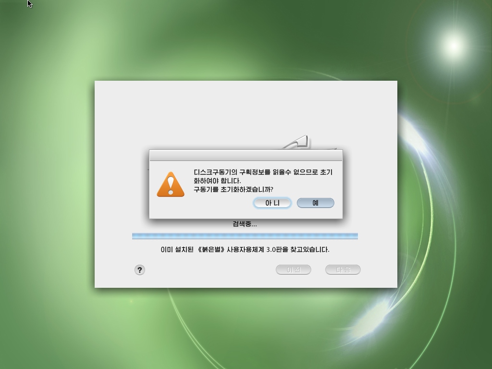

Linux Users Group
Georgia Tech
Spring 2015
Chat at #lugatgt on irc.freenode.net
What is the LUG?
A place where you can learn about linux and other cool stuff. We aim to provide an on campus Linux community.
Basic Meeting Structure
- Weekly presentation on a range of topics.
- Generally friendly banter throughout meetings.
Previous Meetings
Vim
CMake

Super Tux Kart
Imagemagick

Bash
Please volunteer to give a presentation!
SeriouslyNewbies Guide to Using Linux
Pyongyang Style
Red Star OS
Installation
If installing Linux is easy, it's even easier in Korean.
Don't Panic
Even if your host computer crashes and you think your computer is being hacked by the North Koreans.If your having a problem installing Linux then there is a 99% chance that someone else had the exact same problem and wrote a blog post about it.*
*Even for obscure North Korean Linux Distributions
After Installation
After installing Linux for the first time you want to be able to complete some basic tasks on your computer.
- Web Browser
- Office Applications
Web Browser
So of course the first thing you try is the web browser. Only to find out that for some reason the internet isn't working.
Let's Troubleshoot
Searching for the Terminal Emulator
They really should have left it on the dock.
After a couple of commands there is no working internet.
Useless without internet.
Office Applications
sgoffice - fork of open office due to political issues
So come to LUG to learn more!
Installing Linux can be difficult, but also...
- fun
- powerful
- and awesome.
{kind=link}
{kind=link}
{kind=link}
{kind=link}
{kind=link}